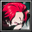
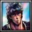

Player profile
nazarian
Rank #17server.eurobattle.netSeason 2
Most played · Blade
Matches3813 wins · 25 losses
Win rate34%
Avg K / D / A40.1 / 41.3 / 13.3
Avg APM108
Avg damage dealt252.7k
Avg damage taken178.2k
Heroes played
Explore heroes →| HERO | MATCHES | WIN RATE | AVG K / D / A | AVG DMG |
|---|---|---|---|---|
BladeMost played | 3 | 67% | 44.3 / 41.0 / 16.7 | 251.4k |
Uchiha Itachi | 2 | 50% | 40.0 / 38.0 / 16.5 | 268.1k |
 Shanks | 2 | 50% | 32.0 / 40.5 / 16.5 | 258.3k |
竈門 炭治郎 | 2 | 50% | 39.5 / 45.5 / 17.5 | 250.9k |
復讐者 | 2 | 0% | 30.5 / 37.5 / 11.5 | 191.6k |
千子村正 | 2 | 0% | 35.5 / 44.5 / 6.0 | 242.9k |
『斬撃の花』 | 2 | 0% | 40.0 / 43.5 / 11.5 | 297.7k |
仮面ライダーエボルブラックホールフォーム | 2 | 0% | 38.0 / 34.0 / 12.0 | 261.5k |
Mastered Ultra Instinct Powered | 1 | 100% | 56.0 / 26.0 / 17.0 | 284.7k |
Majin Alter | 1 | 100% | 48.0 / 42.0 / 14.0 | 304.5k |
黒崎 一護 | 1 | 100% | 48.0 / 38.0 / 15.0 | 278.3k |
Seha Lee | 1 | 100% | 45.0 / 37.0 / 16.0 | 237.2k |
【完全で瀟洒なメイド】 | 1 | 100% | 46.0 / 36.0 / 19.0 | 245.0k |
Shirosaki | 1 | 100% | 56.0 / 39.0 / 14.0 | 360.3k |
ゴクウブラック | 1 | 100% | 52.0 / 41.0 / 17.0 | 259.9k |
藍染 EX | 1 | 100% | 39.0 / 30.0 / 14.0 | 176.7k |
【Joker】 | 1 | 0% | 38.0 / 34.0 / 7.0 | 196.7k |
平和島 静雄 | 1 | 0% | 37.0 / 42.0 / 10.0 | 215.2k |
仮面ライダーアークワン | 1 | 0% | 39.0 / 45.0 / 11.0 | 235.4k |
『Codename 555-SB』 | 1 | 0% | 28.0 / 30.0 / 6.0 | 161.3k |
藤原 妹紅 | 1 | 0% | 38.0 / 46.0 / 15.0 | 245.7k |
ロロノア・ゾロ | 1 | 0% | 29.0 / 48.0 / 11.0 | 230.5k |
雷電忘川守芽衣 | 1 | 0% | 39.0 / 46.0 / 19.0 | 357.1k |
The Last Future of Embryo | 1 | 0% | 32.0 / 45.0 / 10.0 | 169.6k |
チェンソーマン | 1 | 0% | 40.0 / 59.0 / 11.0 | 308.2k |
Kケイ・ダッシュ | 1 | 0% | 31.0 / 55.0 / 14.0 | 225.0k |
Shin Jinrui Sozo Keikaku | 1 | 0% | 37.0 / 46.0 / 6.0 | 211.9k |
黒崎 一護断界 | 1 | 0% | 86.0 / 39.0 / 11.0 | 420.0k |
 Kenshiro | 1 | 0% | 14.0 / 57.0 / 17.0 | 182.6k |
Averages use recorded statistics only; unavailable historical values are shown as —.
Recent matches
Open a match for its scoreboard and kill matchups.
LOSS69:00
MCB #2000240
18 Nov 2026 · 00:20 WIB
38.0 / 45.0 / 17.0View match →
WIN54:24
MCB #2000239
17 Nov 2026 · 00:27 WIB
56.0 / 26.0 / 17.0View match →
LOSS66:02
MCB #2000238
16 Nov 2026 · 23:01 WIB
45.0 / 49.0 / 4.0View match →
LOSS58:52
MCB #1000075
16 Nov 2026 · 21:21 WIB
23.0 / 42.0 / 14.0View match →
WIN61:55
MCB #2000237
16 Nov 2026 · 19:02 WIB
57.0 / 34.0 / 19.0View match →
LOSS63:33
MCB #2000236
15 Nov 2026 · 23:57 WIB
26.0 / 49.0 / 20.0View match →
LOSS53:11
MCB #2000235
15 Nov 2026 · 17:29 WIB
38.0 / 34.0 / 7.0View match →
LOSS60:22
MCB #2000234
14 Nov 2026 · 23:29 WIB
37.0 / 42.0 / 10.0View match →
LOSS57:39
MCB #2000233
14 Nov 2026 · 17:04 WIB
28.0 / 38.0 / 19.0View match →
WIN62:53
MCB #2000231
14 Nov 2026 · 01:30 WIB
48.0 / 42.0 / 14.0View match →